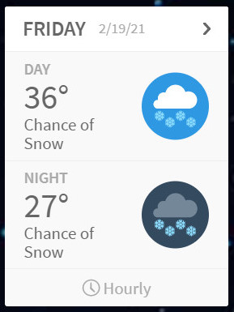
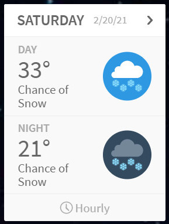
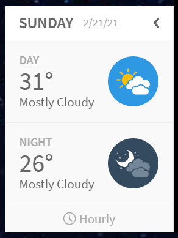
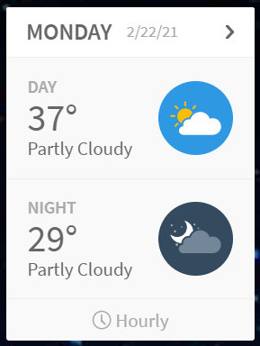
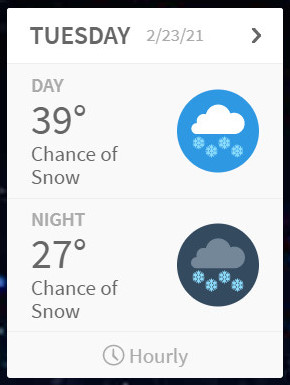

Preston Idaho

Weather Summary
Current Temp: °F
High Temp: 36°F
Wind Chill: °F
Wind Speed: mph
Humidity: 75%
Precipitation: 15%
5 Day Forecast
    Cherry Festival

To people in the wide world, Preston Idaho is a very exotic local.
Idaho does have an annual cherry festival.
This takes place in Emmett Idaho about the middle of June.
Cherries are probably my favorite fruit.
So many products can come from the humble cherry.
Dried cherries are fruit leather. Cherries are usually put into
deserts of some kind.
Cherry pie hot out of the oven. Cherry strudel sprinkled with crystal
sugar.
The best cherries are eaten freshly picked from the tree.
My favortie cherry desert is Black Forest Cherry cake.
I'll be waiting for the cherry harvest in Idaho this coming spring.
Shall you join me? Idaho in June is the place to be for the Cherry
Harvest!

Contact Us
Lilac Mist
📌30 N 1st E
Preston, ID. 83263
☎999-999-9999
lilacmist.com